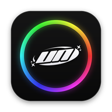
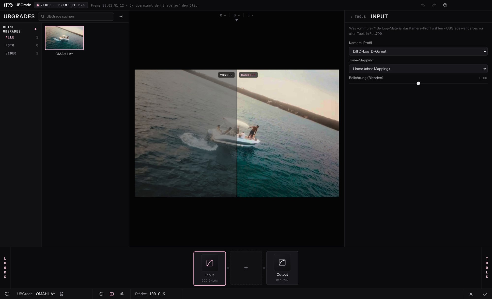
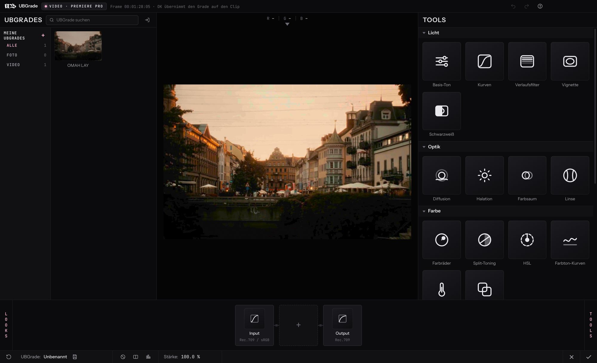
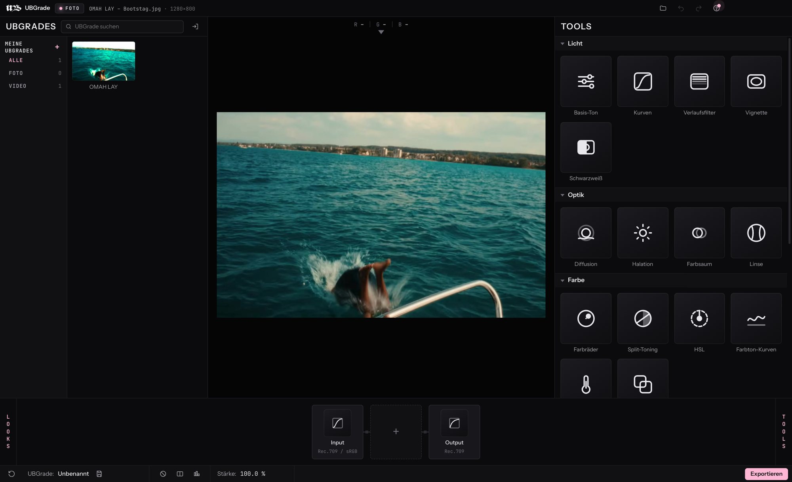

Dein Look.
In jedem Programm.
All-in-one Color Grading für Premiere Pro, After Effects, Photoshop & DaVinci Resolve – Windows & Mac.

Jetzt in der Beta.
Für kurze Zeit kostenlos.
UBGrade ist fertig genug, um damit zu arbeiten – und noch frisch genug, dass dein Feedback zählt. Solange die Beta läuft, kannst du alles kostenlos laden und ausprobieren: die Plugins für Windows & Mac und die Testversion im Browser.
Etwas hakt? Bug melden – jede Meldung macht UBGrade besser.
Vom flachen LOG zum fertigen Look.
Szenen aus dem Musikvideo „OMAH LAY“ von unique. Links unbearbeitet in LOG, rechts der fertige Grade des Videos – keine zusätzlichen Effekte. Zieh den Regler.
Vorher-Ansicht aus dem Musikvideo in LOG zurückgerechnet.
Drei Klicks bis zum Look.
Wie du es von großen Grading-Plugins kennst – nur aufgeräumter. UBGrade öffnet sich direkt mit dem Frame unter deinem Playhead. Nichts reinziehen, nichts exportieren.
Effekt drauf
Effekte › UNIQUEBABY › UBGrade auf den Clip oder eine Einstellungsebene ziehen.
UBGrade öffnen
Ein Klick auf „UBGrade öffnen…“ – dein Frame ist schon da. Look aus Tools zusammenbauen.
OK
Der Grade sitzt auf dem ganzen Clip und wird nativ gerendert. Später nochmal öffnen = weiter feilen.

Alles, was ein Look braucht.
23 Tools in einer Chain
Licht, Optik, Farbe, Film und Finish – jedes Tool mit klarem Icon, frei kombinierbar, an/aus per Klick.
Film-Emulation
Eigene UB-Filmstocks, Halation, Diffusion und organisches Korn – auflösungsunabhängig und animiert.
Looks als .ubgrade
Speichern, teilen, importieren. Ein Look funktioniert in allen Programmen – und als .cube-LUT für alles andere.

Foto-Edition
Die UBGrade App und der Photoshop-Filter für Bilder – in voller Auflösung, als Smartfilter wieder bearbeitbar.
Scopes & False Color
Waveform, RGB-Parade, Vektorskop und Histogramm direkt unterm Bild.
Neu im Grading?
Tutorial mit (?) direkt am Regler und eine Anfänger-Anleitung mit 4 Starter-Looks.
Kostenlos laden.
Solange die Beta läuft, für alle. Der Installer erkennt jede installierte Version von Premiere Pro, After Effects und Photoshop – du wählst, wo UBGrade landet. DaVinci Resolve, Adobe-Panel und App sind dabei, ein Uninstaller auch.
Noch unsigniert: Windows zeigt evtl. „Der Computer wurde durch Windows geschützt“ → Weitere Informationen › Trotzdem ausführen. Auf dem Mac den Installer per Rechtsklick › Öffnen starten.
Etwas läuft nicht rund?
Schreib uns, was passiert ist – die Meldung geht direkt an support@uniquebaby.de. Je genauer, desto schneller ist es gefixt.